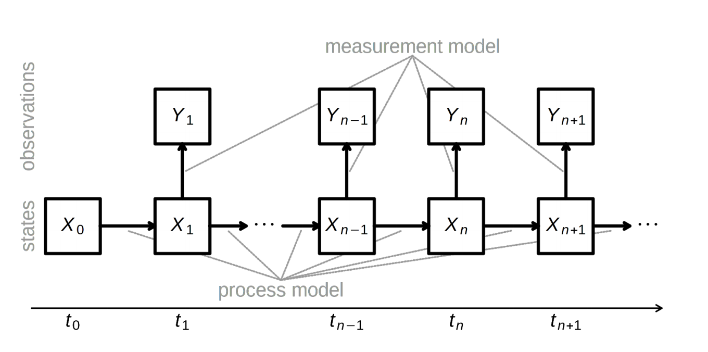
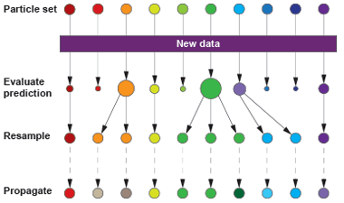

Fitting models to time series
A general approach to model fitting
Pick a model, including parameter values
Evaluate how likely the observed data are, given the model
Tweak the model to make the observations more likely
Is this model superior to other models?
Maximum likelihood (ML) inference
In ML, you have some set of data $D$ and a model for generating this data. This model has parameters $\theta$. The probability of observing data is $\mathrm{Pr}(D \, | \, \theta)$. The best parameter point estimate $\hat{\theta}$ is simply the value that maximizes $\mathrm{Pr}(D \, | \, \theta)$.
Maximum likelihood (ML) inference
For example, if we have data $D$ from a Bernoulli observation model representing $k$ successes in $n$ trials, then the probability of observing $k$ and $n$ given coin flip probability parameter $p$ is simply $$\mathrm{Pr}(k,n \, | \, p) = p^k \, (1-p)^{n-k}.$$
Maximum likelihood (ML) inference
For the Bernoulli model $\mathrm{Pr}(k,n \, | \, p) = p^k \, (1-p)^{n-k}$, we have $\hat{p} = k/n$. For example, with $k=8$ and $n=10$, $\hat{p}=0.8$ the likelihood curve follows

Likelihood in timeseries models
Observed trajectory $D=(t_0,...,t_n)$ depends on unknown parameter(s) $\theta$
Probability density function of $D$ is $f_{\theta}$
$$L_D(\theta)=f_{\theta}(D)$$
Problem: These data aren't independent.
Likelihood from non-independent data
Solution: Factor the joint density into conditional and marginal
e.g., $f(y_3,y_2,y_1)=f(y_3 \, | \, y_2,y_1) \cdot f(y_2,y_1)$
$$f(y_3,y_2,y_1)=f(y_3 \, | \, y_2,y_1) \cdot f(y_2 \, | \, y_1) \cdot f(y_1)$$
$$L(\theta)=\prod_{t=2}^{T}f(y_t|l_{t-1})\cdot f(y_1)$$
where $l_{t-1}$ is information through $t-1$ (i.e., $y_{t-1},...,y_1$), and $T$ is the time series length
What's $D$?
Case counts at different times
Sequences
Titers
or some composite of observations
Maximizing the likelihood
means maximizing the log-likelihood
or minimizing the negative log-likelihood
Finding the maximum likelihood
Can be analytically tractable
For our models, it's not
General approaches to likelihood maximization
Brute force
Derivative-based methods
Simplex
Simulated annealing
Sequential Monte Carlo
Many others... but few tried and true
Inference for time series
POMP (partially observed Markov Process)
pMCMC (particle Markov chain Monte Carlo)
TSIR, if conditions met
Interacting dengue serotypes

Likelihood profiles
Hold parameter(s) constant, fit the rest

Bayesian inference
Generally, it's difficult to make probability statements using frequentist statistics. You cannot directly say that model 1 is twice as likely as model 2. People misuse p values in this sort of fashion all the time.
Bayes' rule
Bayes' rule forms the basis of Bayesian inference, it states: $$ \mathrm{Pr}(A \, | \, B) = \cfrac{ \mathrm{Pr}(B \, | \, A) \, \mathrm{Pr}(A) }{ \mathrm{Pr}(B) } $$
Bayesian inference
Bayesian inference applies Bayes' rule in a likelihood context, so that $$ \mathrm{Pr}(\theta \, | \, D) = \cfrac{ \mathrm{Pr}(D \, | \, \theta) \, \mathrm{Pr}(\theta) }{ \mathrm{Pr}(D) }, $$ where $D$ is data and $\theta$ are parameters. $\mathrm{Pr}(D)$ is constant with respect to $\theta$, so that $ \mathrm{Pr}(\theta \, | \, D) \propto \mathrm{Pr}(D \, | \, \theta) \, \mathrm{Pr}(\theta)$. This relationship is often referred to as $ \mathrm{posterior} \propto \mathrm{likelihood} \times \mathrm{prior}$.
Bayesian inference for Bernoulli model
Following our previous Bernoulli example, we've observed $k$ successes in $n$ trials, and so the likelihood $\mathrm{Pr}(k,n \, | \, p) = p^k \, (1-p)^{n-k}$. We'll assume a flat prior $\mathrm{Pr}(p) = 1$. In this case, the marginal likelihood follows $$\mathrm{Pr}(k,n) = \int_0^1 \mathrm{Pr}(k,n \, | \, p) \, \mathrm{Pr}(p) \, dp = \cfrac{k! \, (n-k)!}{(n+1)!}.$$ And the full posterior follows $$\mathrm{Pr}(p \, | \, k,n) = \cfrac{(n+1)! \, p^k \, (1-p)^{n-k}}{k! \, (n-k)!}.$$
Bayesian inference allows for probability statements
If $k=8$ and $n=10$, the mean posterior $\mathrm{E}[p] = 0.75$, while the 95% credible interval extends from $0.482$ to $0.896$, and the posterior distribution follows

Maximum likelihood (ML) inference
For the Bernoulli model $\mathrm{Pr}(k,n \, | \, p) = p^k \, (1-p)^{n-k}$, we have $\hat{p} = k/n$. For example, with $k=8$ and $n=10$, $\hat{p}=0.8$ the likelihood curve follows
Methods for Bayesian integration
Markov Chain Monte Carlo
Metropolis-Hastings MCMC
Particle MCMC
Hybrid/Hamiltonian Monte Carlo
Many others
Introduction to Monte Carlo integration
Simulation-based inference
e.g., R-package pomp
Fit models to time series or (new) longitudinal data
A simple model of HPV

$\lambda_{i,j,t}=\lambda_{0_j}f(\overrightarrow{\theta_j} \boldsymbol{X_{it}}) + \text{I(prev. inf.)}d_{jc_i}e^{-w_j(t-t_\mathrm{clr})}$
Past infection raises risk, even for celibates

Probes and arbitrary metrics
Approximate Bayesian Computation
Time-series probes
Phases insufficient to infer interaction

Challenges fitting multistrain models
Many parameters
Multiple minima
Noise, nonstationarity, etc.
How would we estimate how strongly two strains are competing?
Assume we have time series of cases of each.
One approach (1/3)
- Assume this morning's model structure. (Potential modifications: allow coinfections, noise in rates.)
- Create a mapping from latent states (number infected, $X(t)$) to data (cases, $Y(t)$), e.g., $$Y(t) \sim \text{nbinom}(\text{mean} = \rho X(t), \text{size} = \psi )$$ with $\rho$ representing the reporting rate. (N.B. Potential problems with overcounting here; better to use an accumulator variable.)
One approach (2/3)
One approach (3/3)
Constrain/fix some parameters, fit (vary) $\alpha$, a, maybe $\rho$, etc., to find the parameter combinations that maximize the likelihood of the data, e.g., multiple iterated filtering using a particle filter (sequential Monte Carlo)
When should we trust a model?
Model "validation"
Confirm convergence
AIC and WAIC
Leave-one-out cross-validation (LOO)
Out-of-sample prediction
Replicate on simulated data
Gauge the power of your data

(but this sounds so hard)
Appendix 1: Inference via state-space reconstruction
A system with two state variables
$$H'=aH-bHL$$
$$L'=cHL-dL$$
$H$ hares, $L$ lynxes
hare birth rate $a$, predation rate $b$,
consumption rate $c$, death rate $d$
Solve for H(t), L(t) by numerical integration

Attractor is a limit cycle

A more complex system
$$x'=\sigma(y-x)$$
$$y'=x(\rho-z)-y$$
$$z'=xy-\beta z$$
The Lorenz attractor

Implications of state-space reconstruction
We can detect underlying structure
We can detect and predict without understanding
New claim: We can infer causal interactions
Takens' theorem
Very roughly, the system's attractor is diffeomorphic to (can be mapped without loss of information) to the individual attractors of the state variables in some delay-embedding space.
Manifolds and shadow manifolds

Introduction to Takens' Theorem
Causal inference from "ecological" data?
Through their shadow manifolds, variables in the same dynamical system can predict each other.
If $X$ drives $Y$, increasing the number of observations of $Y$ should improve predictions of states of $X$.
Convergent cross-mapping
To infer if $X$ drives $Y$:
- Construct the shadow manifold of $Y$, $\pmb{M}_Y$ (for some $E$, $\tau$). (Each point in $\pmb{M}_Y$ is given by $\vec{y}(t) = \{y_t,y_{t-\tau},y_{t-2\tau},...,y_{t-(E-1)\tau}\}$.)
- For each $X(t)$, identify its analogues $\vec{x}(t)$ and $\vec{y}(t)$.
- Find the $E+1$ nearest neighbors of $\vec{y}(t)$ and weight them by their Euclidean distances to $\vec{y}(t)$.
- To make a prediction $\hat{X}(t)$, multiply these weights by the respective points in $\pmb{M}_X$. Let $\rho$ be the correlation between $\vec{x}(t)$ and $\hat{X}(t)$.
- First make predictions from $\pmb{M}_Y$ constructed with only a few points in the time series, $L_\text{min}$, and then with many, $L_\text{max}$.
- If $\rho$ increases with more information on $\pmb{M}_Y$, $X$ drives $Y$.
Introduction to convergent cross-mapping
What do you expect $\rho$ to converge to?
Deterministic toy model

Under determinism, perfect predictability

What about non-interacting variables sharing a driver?
$X$ and $Y$ do not interact but share a driver

Applied to predator-prey cycles

Cross-map lag shows direction

Anchovies, sardines, and SST

What are the assumptions?
Application to real time series

Claim: Absolute humidity drives influenza

But does flu drive humidity?

Appendix 2: Example of model validation
Building confidence in your model
Predict something else
Exploit natural and unnatural disturbances
Streptococcus pneumoniae
Carried by 20-80% of young children
Transmitted mostly between healthy carriers
>90 serotypes
Some serotypes seem better at everything
Little evidence for anticapsular immunity

Non-serotype-specific immunity

Fitted duration of carriage

Approach
For each value of serotype-specific immunity, $\sigma$
Fit the transmission rate to obtain 40% prevalence in kids
(Later, sensitivity analysis on fixed parameters)
Model reproduces diversity

...including rank-frequency
Other matched patterns
Increase in serotype diversity with age
Stable rank order
Decrease in carriage duration with age
Frequency of co-colonizations
Epidemics of rarer serotypes
Vaccinations as natural experiments